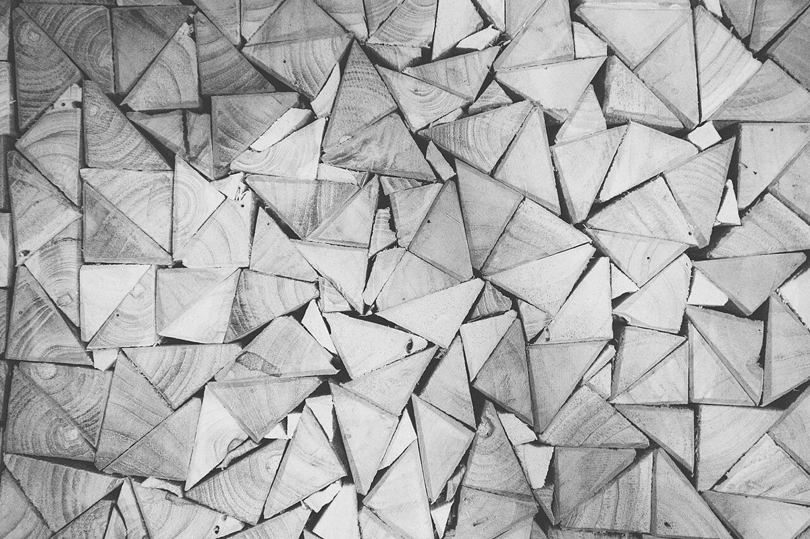
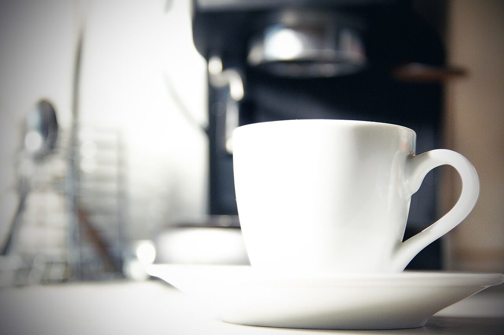

MATCH 01

四角(積んだ角)

三角(敷いた切片)


制作側の連想
屋号の由来や数字の意味は分かりません。制作側は「VS」という文字から、対戦ゲームの開始前に出る、左右に分かれた対戦画面を連想しました。そこでこのサイトは、物と物を「A VS B」で並べる対戦カードの作りにしています。お店の理念・由来とは無関係の、制作側の連想です。
本日の対戦カード(イメージ)
写真は岩国市やお店のものではありません。国外または撮影地不明のフリー素材を、制作側が組み合わせた遊びです。
MATCH 01
四角(積んだ角)

三角(敷いた切片)
MATCH 02

真上から

斜めから
MATCH 03

ミル(ほか)

フィルター
MATCH 04

織り目

粒
ご案内
| 所在地 | 〒740-0026 山口県岩国市車町３丁目２１−１０ |
|---|---|
| 電話 | なし |
| 営業時間 | 準備中 |
| 定休日 | 準備中 |
| ご予約 | 準備中 |
| 駐車場 | 準備中 |
| SNS | Instagram @vs1981coffee2025 |